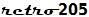

ElectroData/Burroughs Datatron 205 Emulator –
Hosting Site Home
This site hosts the current version of the retro-205 emulator, an implementation of the ElectroData/Burroughs Datatron 205 computer system that runs in a web browser.
Main Links
- 205 Emulator Home Page
The home page from which you can start the emulator and open the control panels.
Please see the Getting Started and Configuring the Emulator wiki pages for information on setting up and running the emulator.
- Project Wiki
Documentation to assist you in setting up and operating the emulator.
- Open Source Project
Source code, documentation, and other developer resources for the retro-205 emulator project at GitHub. Includes source code and resources for the BAC-205 Algol-58 compiler and several example programs.
- Project Blog
Tom Sawyer's Burroughs 205 and 220 blog, which includes posts related to this emulator.
- Useful Links
A page containing links to specific documents, source code, and developer resources.
- Burroughs 205 Documents at bitsavers.org
A collection of scanned copies of original Burroughs manuals and other reference materials for the Datatron 205 system. This project would not have been possible without the availability of these materials.
Like this? Check out the
Burroughs B5500 and
Burroughs 220
Emulators.
Revised
2019-01-29